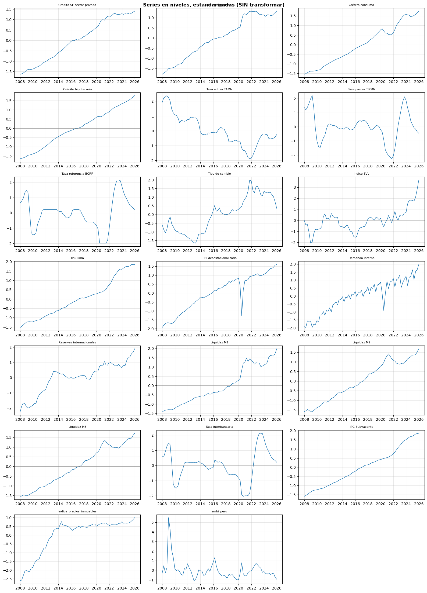

04 · Preprocesamiento — Única Etapa de Transformación
Tesis: Medición del ciclo financiero en Perú Autor: Roberto Samaniego | Asesor: Dr. Sergio Camiz
Responsabilidad única de este notebook: aplicar, de forma explícita y documentada, las transformaciones necesarias para dejar el dataset listo para PCA/HFC. Es el único lugar del pipeline donde el dato cambia de forma — por eso conviene que tu asesor revise específicamente este notebook.
Entrada:data/raw/series_bcrp_raw.csv (inmutable, generado en 01_extraccion_bcrp.ipynb) Salida: cuatro versiones en data/processed/, cada una con su propósito documentado: 1. dataset_niveles_trimestral.csv — niveles, solo sincronizado a trimestral 2. dataset_niveles_estandarizado_trimestral.csv — niveles + estandarización (SIN log-diff/diff) 3. dataset_transformado_trimestral.csv — estacionario (log-diff / diff), sin estandarizar 4. dataset_estandarizado_trimestral.csv — transformado + estandarizado, listo para PCA/HFC
Las versiones (2) y (4) permiten correr PCA/HFC en ambos enfoques bajo igualdad de condiciones (ambas estandarizadas), difiriendo solo en si las series están o no diferenciadas – ver la discusión metodológica sobre niveles vs. diferencias vs. brechas antes de interpretar resultados.
Guardar las cuatro versiones (y no solo la última) permite auditar cada paso por separado y comparar resultados de PCA/HFC entre enfoques.
1. Librerías y carga del dato crudo (solo lectura)
import osos.chdir('..')import pandas as pdimport numpy as npimport matplotlib.pyplot as pltfrom sklearn.preprocessing import StandardScalerimport warningswarnings.filterwarnings('ignore')df_raw = pd.read_csv('data/raw/series_bcrp_raw.csv', index_col=0, parse_dates=True)print(f'Dataset crudo cargado (solo lectura): {df_raw.shape[0]} filas x {df_raw.shape[1]} columnas')
Dataset crudo cargado (solo lectura): 228 filas x 18 columnas
2. Carga de series con frecuencia distinta a la mensual (trimestral/diaria)
Estas series ya vienen en otra frecuencia y se cargan desde su propio archivo crudo en data/raw/, sin modificar esos archivos tampoco: - Índice de precios de inmuebles: trimestral. - EMBI Perú: diario (se sincroniza a trimestral en este mismo notebook, igual criterio de promedio del periodo que el resto de series).
ruta_inmuebles ='data/raw/indice_precios_inmuebles_bcrp.csv'if os.path.exists(ruta_inmuebles): df_inmuebles = pd.read_csv(ruta_inmuebles, parse_dates=['fecha']).set_index('fecha') df_inmuebles = df_inmuebles[['indice_precios_inmuebles']]print(f'Índice de inmuebles: {df_inmuebles.shape[0]} observaciones trimestrales')else: df_inmuebles =Noneprint(f'⚠ No se encontró {ruta_inmuebles}; continuar sin esta serie o agregarla a data/raw/')ruta_embi ='data/raw/embi_peru_raw.csv'if os.path.exists(ruta_embi): df_embi_diario = pd.read_csv(ruta_embi, index_col=0, parse_dates=True)# EMBI es diario -> se sincroniza a trimestral aqui, mismo criterio (promedio# del periodo) que se usa para el resto de series mensuales en la celda siguiente. df_embi = df_embi_diario.resample('QE').mean() df_embi.index = df_embi.index.to_period('Q').to_timestamp('Q')print(f'EMBI Perú (resampleado a trimestral): {df_embi.shape[0]} observaciones')else: df_embi =Noneprint(f'⚠ No se encontró {ruta_embi}; continuar sin esta serie o agregarla a data/raw/')
Índice de inmuebles: 73 observaciones trimestrales
EMBI Perú (resampleado a trimestral): 92 observaciones
3. Sincronización a frecuencia trimestral
Convertimos las series mensuales a trimestrales usando el promedio del periodo (estándar en la literatura de ciclo financiero — Drehmann et al., 2012). Esta es la primera transformación explícita del pipeline.
Dataset trimestral sincronizado: 73 filas x 20 columnas
Periodo: 2007-Q a 2025-Q
Crédito SF sector privado
Crédito empresarial
Crédito consumo
Crédito hipotecario
Tasa activa TAMN
Tasa pasiva TIPMN
Tasa referencia BCRP
Tipo de cambio
Índice BVL
IPC Lima
PBI desestacionalizado
Demanda interna
Reservas internacionales
Liquidez M1
Liquidez M2
Liquidez M3
Tasa interbancaria
IPC Subyacente
indice_precios_inmuebles
embi_peru
fecha
2024-12-31
460394.701617
237633.598836
100069.529867
69335.483733
14.801200
2.501567
5.083333
3.755779
29638.906667
114.055972
186.271537
214.531034
81841.171646
155514.941238
494303.843763
674532.616931
5.087533
113.847693
109.7
154.590909
2025-03-31
456774.093152
236778.252658
101058.649467
70297.486800
14.887933
2.350667
4.750000
3.699348
29206.940000
114.517122
186.670088
195.753208
82090.952732
154545.909113
494621.336122
677571.334708
4.743567
114.604151
110.3
159.296875
2025-06-30
462485.215621
241704.343499
102568.723467
71630.534667
14.964433
2.275700
4.583333
3.654583
31382.773333
115.578304
188.196300
211.308791
85230.055379
153630.814037
497235.017914
679733.838136
4.579798
115.601456
112.1
163.369231
2025-09-30
469614.044593
246599.228130
104730.239200
72794.733733
15.181400
2.144900
4.416667
3.534073
35477.593333
115.703282
191.068370
214.534013
86793.687681
159823.459467
516742.454201
704258.295744
4.458800
116.014400
113.9
137.181818
2025-12-31
474703.664297
249912.263617
107341.334133
74318.780000
15.730100
2.065467
4.250000
3.384559
40347.526667
115.663913
192.125609
224.921388
90357.811041
170904.626269
537215.438322
724148.631989
4.246300
116.261363
116.4
125.318182
4. Revisión y tratamiento de valores faltantes
nulos = df_completo.isna().sum()pct_nulos = (nulos /len(df_completo) *100).round(1)print(pd.DataFrame({'Nulos': nulos, 'Nulos %': pct_nulos}))# Se eliminan filas con cualquier nulo para el análisis multivariado (PCA/HFC# requieren matriz completa). Esta decisión queda documentada aquí, no oculta# en el notebook de extracción.df_limpio = df_completo.dropna()print(f'\nDataset limpio (sin nulos): {df_limpio.shape[0]} filas x {df_limpio.shape[1]} columnas')print(f'Periodo final: {df_limpio.index.min().strftime("%Y-Q")} a {df_limpio.index.max().strftime("%Y-Q")}')
4b. Estandarización de niveles (SIN transformar) — para comparación
Se genera una segunda versión estandarizada, pero a partir de los niveles originales (df_limpio), sin logaritmo ni diferenciación.
Propósito: permitir correr PCA/HFC sobre niveles y sobre la versión transformada bajo condiciones comparables (ambas estandarizadas), y contrastar los resultados de ambos enfoques – ver la discusión metodológica sobre niveles vs. diferencias en el marco conceptual.
Advertencia reconocida (no oculta): si las variables de nivel comparten una tendencia de crecimiento común en 2003-2025, el primer componente del PCA sobre esta versión puede capturar en buena parte esa tendencia compartida, en lugar de una estructura de co-movimiento más fina. Esto debe evaluarse explícitamente al interpretar los resultados (por ejemplo, revisando si PC1 correlaciona fuertemente con una tendencia temporal simple).
Verificación — media ≈ 0, varianza ≈ 1 (niveles estandarizados, sin transformar):
Gráfico guardado

5. Transformaciones de estacionariedad
Niveles (créditos, PBI, demanda, reservas, inmuebles, BVL, IPC, tipo de cambio): logaritmo + primera diferencia
Tasas y porcentajes (TAMN, TIPMN, referencia): primera diferencia simple
# NOTA: 'IPC Subyacente' (nueva) NO se incluye aqui a proposito. Se usa# normalmente como serie de contraste/validacion frente al IPC general,# no como insumo directo del PCA/HFC. Si tu diseño la quiere incluir en el# modelo, agregala a VARS_LOG_DIFF y documenta el motivo en esta celda.VARS_LOG_DIFF = [# 'Crédito SF sector privado', # Total -- excluir si se usan los 3 componentes'Crédito empresarial', 'Crédito consumo', 'Crédito hipotecario','Tipo de cambio', 'Índice BVL', 'IPC Lima','PBI desestacionalizado', 'Demanda interna', 'Reservas internacionales','indice_precios_inmuebles','Liquidez M1', 'Liquidez M2', 'Liquidez M3', # NUEVO]VARS_DIFF_SIMPLE = ['Tasa activa TAMN', 'Tasa pasiva TIPMN', 'Tasa referencia BCRP','Tasa interbancaria', # NUEVO'embi_peru', # NUEVO]df_transformado = pd.DataFrame(index=df_limpio.index)for col in VARS_LOG_DIFF:if col in df_limpio.columns: df_transformado[f'{col}_log_diff'] = np.log(df_limpio[col]).diff()for col in VARS_DIFF_SIMPLE:if col in df_limpio.columns: df_transformado[f'{col}_diff'] = df_limpio[col].diff()df_transformado = df_transformado.dropna()print(f'Dataset transformado (estacionario): {df_transformado.shape[0]} filas x {df_transformado.shape[1]} columnas')df_transformado.tail()
Dataset transformado (estacionario): 72 filas x 18 columnas
Crédito empresarial_log_diff
Crédito consumo_log_diff
Crédito hipotecario_log_diff
Tipo de cambio_log_diff
Índice BVL_log_diff
IPC Lima_log_diff
PBI desestacionalizado_log_diff
Demanda interna_log_diff
Reservas internacionales_log_diff
indice_precios_inmuebles_log_diff
Liquidez M1_log_diff
Liquidez M2_log_diff
Liquidez M3_log_diff
Tasa activa TAMN_diff
Tasa pasiva TIPMN_diff
Tasa referencia BCRP_diff
Tasa interbancaria_diff
embi_peru_diff
fecha
2024-12-31
-0.006636
0.012901
0.015412
-0.000586
0.011261
-0.000592
0.011096
0.058146
0.042047
0.001825
0.028821
0.020312
0.026373
-0.107067
-0.176867
-0.416667
-0.441967
-9.386869
2025-03-31
-0.003606
0.009836
0.013779
-0.015139
-0.014682
0.004035
0.002137
-0.091600
0.003047
0.005455
-0.006251
0.000642
0.004495
0.086733
-0.150900
-0.333333
-0.343967
4.705966
2025-06-30
0.020591
0.014832
0.018785
-0.012175
0.071853
0.009224
0.008143
0.076466
0.037526
0.016187
-0.005939
0.005270
0.003186
0.076500
-0.074967
-0.166667
-0.163769
4.072356
2025-09-30
0.020049
0.020855
0.016122
-0.033531
0.122642
0.001081
0.015146
0.015148
0.018180
0.015930
0.039517
0.038482
0.035444
0.216967
-0.130800
-0.166667
-0.120998
-26.187413
2025-12-31
0.013345
0.024626
0.020720
-0.043227
0.128629
-0.000340
0.005518
0.047283
0.040244
0.021712
0.067036
0.038855
0.027851
0.548700
-0.079433
-0.166667
-0.212500
-11.863636
6. Estandarización (media 0, varianza 1)
Paso requerido antes de aplicar PCA/HFC, siguiendo a Camiz et al. (2020).
Se guardan las cuatro versiones para trazabilidad y para poder comparar PCA/HFC sobre niveles vs. sobre la versión transformada; ninguna sobrescribe data/raw/series_bcrp_raw.csv.
os.makedirs('data/processed', exist_ok=True)df_limpio.to_csv('data/processed/dataset_niveles_trimestral.csv')df_niveles_estandarizado.to_csv('data/processed/dataset_niveles_estandarizado_trimestral.csv')df_transformado.to_csv('data/processed/dataset_transformado_trimestral.csv')df_estandarizado.to_csv('data/processed/dataset_estandarizado_trimestral.csv')print('Datasets guardados en data/processed/:')print(' - dataset_niveles_trimestral.csv (niveles, solo sincronizado)')print(' - dataset_niveles_estandarizado_trimestral.csv (niveles + estandarizado, SIN transformar)')print(' - dataset_transformado_trimestral.csv (estacionario, sin estandarizar)')print(' - dataset_estandarizado_trimestral.csv (transformado + estandarizado, listo para PCA/HFC)')print(f'\nDimensiones niveles (estandarizado): {df_niveles_estandarizado.shape[0]} trimestres x {df_niveles_estandarizado.shape[1]} variables')print(f'Dimensiones transformado (estandarizado): {df_estandarizado.shape[0]} trimestres x {df_estandarizado.shape[1]} variables')print()print('El siguiente notebook (05_pca_hfc.ipynb) puede correr sobre ambas versiones')print('estandarizadas para comparar resultados de niveles vs. transformado.')
Datasets guardados en data/processed/:
- dataset_niveles_trimestral.csv (niveles, solo sincronizado)
- dataset_niveles_estandarizado_trimestral.csv (niveles + estandarizado, SIN transformar)
- dataset_transformado_trimestral.csv (estacionario, sin estandarizar)
- dataset_estandarizado_trimestral.csv (transformado + estandarizado, listo para PCA/HFC)
Dimensiones niveles (estandarizado): 73 trimestres x 20 variables
Dimensiones transformado (estandarizado): 72 trimestres x 18 variables
El siguiente notebook (05_pca_hfc.ipynb) puede correr sobre ambas versiones
estandarizadas para comparar resultados de niveles vs. transformado.